Uma leitura do cardápio digital e do Instagram da casa, com o que já funciona, o que está deixando venda na mesa e um plano para os próximos 30 dias.
A Supreme tem produto forte, fotografia profissional e uma base de seguidores que muita hamburgueria de Recife queria ter. O que falta é fazer o cardápio e o perfil trabalharem a favor da venda.
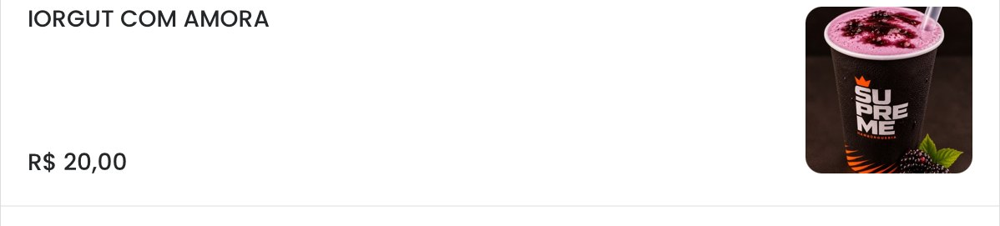
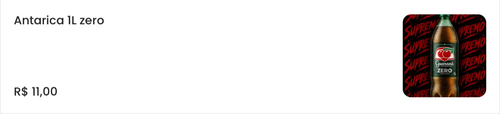
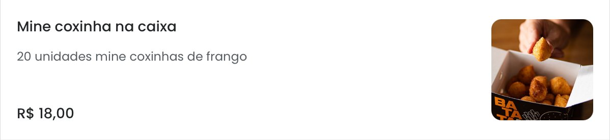
“IORGUT COM AMORA”, “Antarica 1L zero”, “Mine coxinha”, “Blend bovino 150,g”, “Capitaozinho”. Além disso, uns nomes estão em CAIXA ALTA e outros em minúsculas (“entradinhas”, “pepsi lata 350ML”). Para quem não conhece a casa, isso passa descuido.
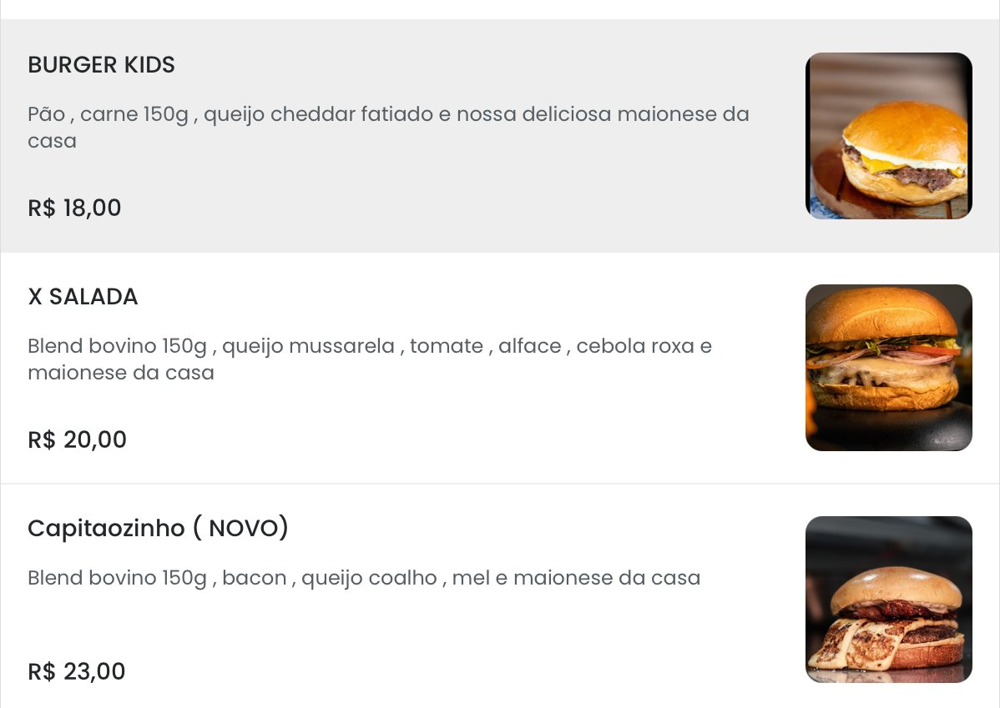
São 19 burgers, e 14 deles custam entre R$ 20 e R$ 24, quase todos com “blend 150g + maionese da casa”. Diante de tanta coisa parecida, o cliente demora para decidir e acaba no mais barato. A seção Destaques está vazia, e o único produto em destaque é o combo de Black Friday.
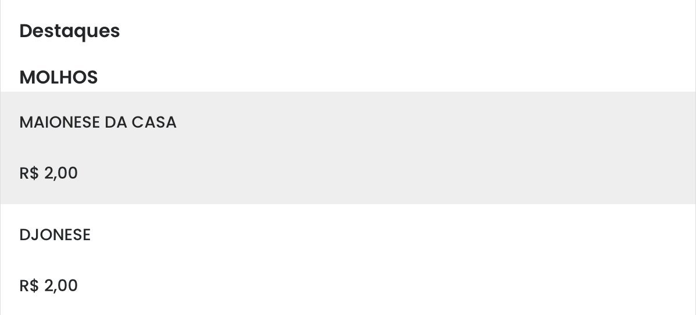
A “Djonese” custa R$ 2,00 e não tem descrição. Como o cliente não sabe o que é, não compra. Molho é o adicional de maior margem da casa.
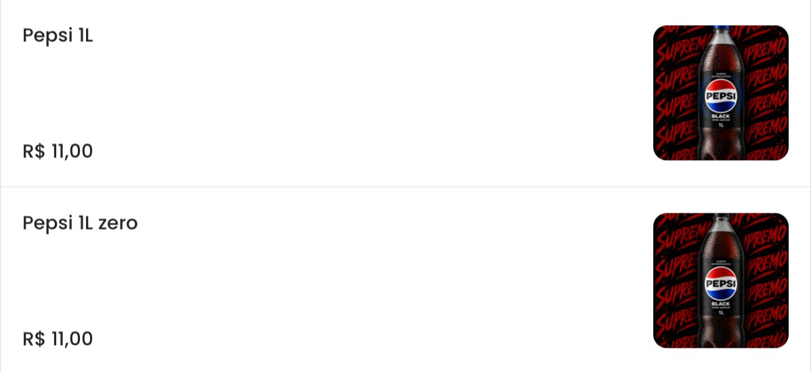
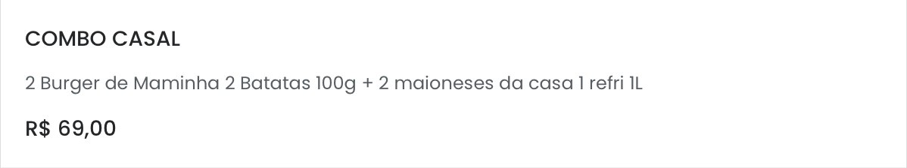
A Pepsi 1L e a Pepsi 1L zero usam a mesma foto da Pepsi Black. O Combo Casal (R$ 69) e a Vitamina de cupuaçu estão sem foto, e o combo não mostra quanto o casal economiza. Os fundos vermelhos das bebidas também fogem da paleta preto e laranja da marca.
“hot-dog ESPECIAL (NOVO)”, “Capitaozinho ( NOVO)” e “Naquele modelo: o especial de outubro voltou…”. Quando o selo “novo” nunca sai, ele deixa de chamar a atenção.
O perfil anuncia “Maminha 2.0” e “American 2.0”, mas no cardápio aparecem “MAMINHA” e “AMERICAN PRO”. O Hambúrguer do Mês não tem uma vaga própria no cardápio.
Os posts de produto são bonitos, mas são todos o mesmo post: um close do burger e uma legenda genérica (“Dá vontade de morder só de olhar…”, “Sabor que marca…”). Com 25,9 mil seguidores, cada post recebe de 6 a 37 curtidas e quase nenhum comentário.
| Ponto | Hoje | Sugestão |
|---|---|---|
| Bio | A primeira linha é “Trabalhe conosco”, e o horário aparece cortado. | Primeira linha: o que a casa é e o bairro. Depois horário, delivery e link. |
| Link | Linktree, ou seja, mais um clique até o pedido. | Link direto para o cardápio da Yooga. |
| Legendas | Adjetivos, sem nome, sem preço e sem chamada. | Nome + o que vem no burger + preço + “peça pelo link da bio”. |
| Formato | Quase tudo é foto estática de produto. | Alternar entre produto, bastidor da chapa, cliente real e reels de montagem. |
| Hashtags | #SupremeBurger #QuemResiste | Local: #jaboatao #hamburgueriajaboatao #recifefood |
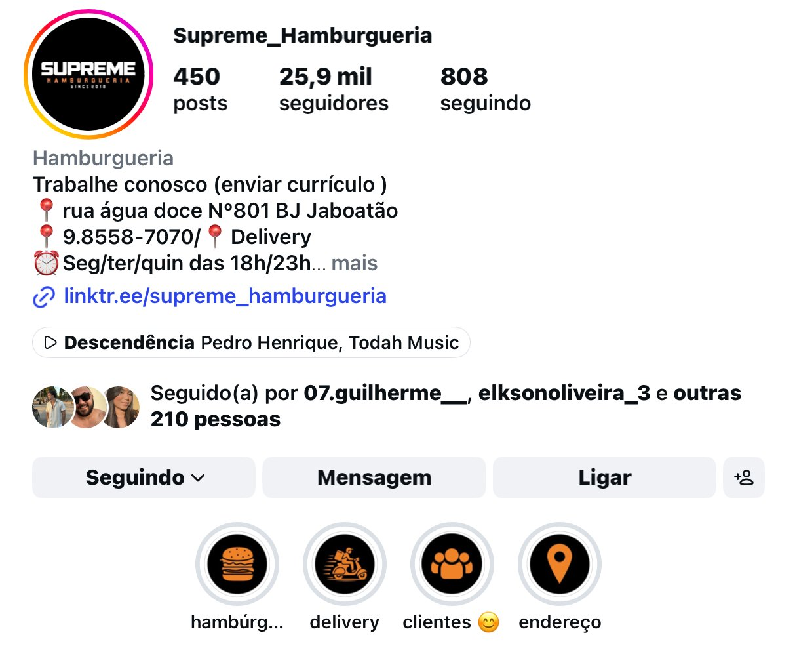
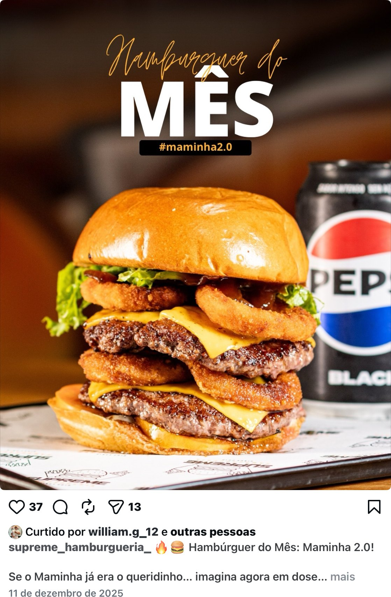
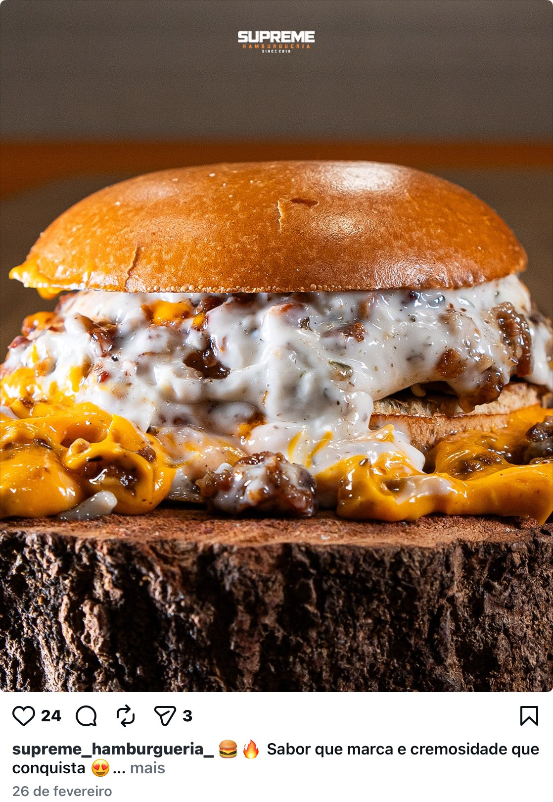
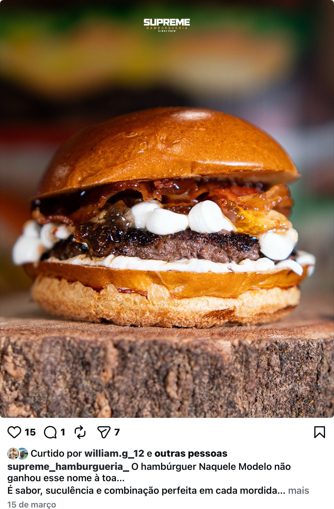
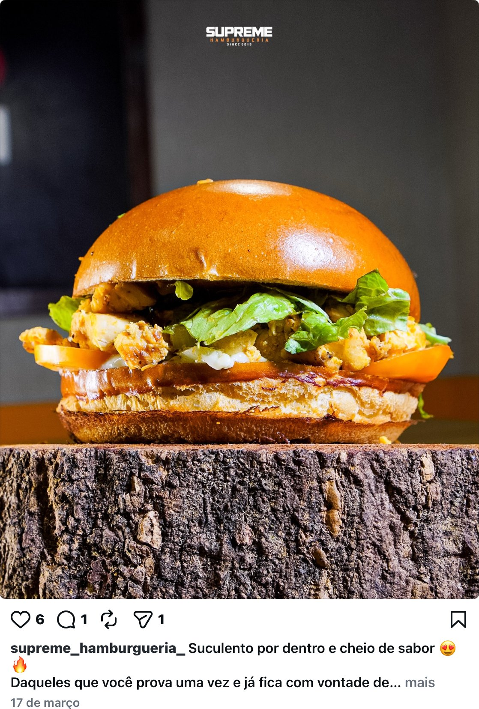
O post que mais engajou foi o único com uma ideia por trás: Hambúrguer do Mês, com nome e motivo para pedir. Esse é o caminho.
| Quando | O quê | Resultado esperado |
|---|---|---|
| Semana 1 | Corrigir todos os textos do cardápio, tirar os selos “novo” vencidos, colocar foto nos itens sem foto e descrever os molhos. | Cardápio com cara de casa profissional. Custo zero. |
| Semana 1 | Reescrever a bio e trocar o Linktree pelo link direto do cardápio. | Menos cliques entre o post e o pedido. |
| Semana 2 | Reorganizar o cardápio: 3 carros-chefe no topo, Hambúrguer do Mês fixo, burgers agrupados por estilo e combos mostrando a economia. | Escolha mais rápida e ticket médio maior. |
| Semana 2 | Molho e batata como adicional sugerido em cada burger. | Mais itens por pedido, com a maior margem. |
| Semanas 3 e 4 | Calendário de posts com legenda que vende (nome, preço, chamada), reels de bastidor e conteúdo com clientes. | Mais alcance local e mais pedidos vindos do Instagram. |
| Semanas 3 e 4 | Análise de custo e margem dos burgers para decidir o que destacar, o que reajustar e o que sair do cardápio. | Destacar o que dá mais lucro, não só o que vende mais. |
Uma conversa de 30 minutos para mostrar este diagnóstico e montar, junto com vocês, o plano da Supreme. Para a análise de lucro do cardápio, vou precisar de:
Diagnóstico feito a partir do cardápio público em supremehamburgueria01.com.br e do perfil @supreme_hamburgueria_, consultados em 14/11/2026. Curtidas contadas em 12 posts de produto de nov/2025 a mar/2026.